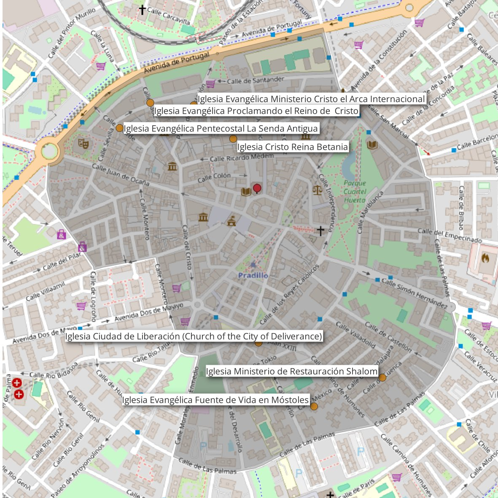
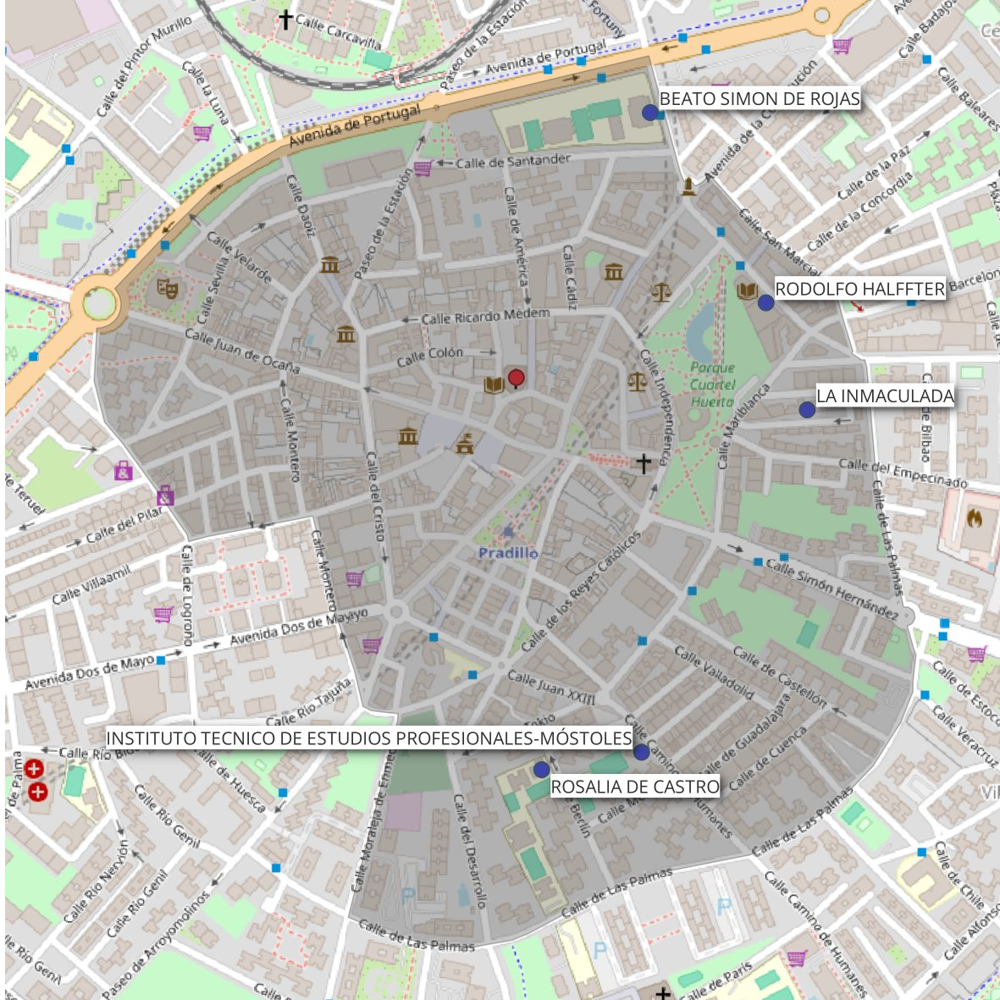

Puntos de interés en el territorio parroquial
Parroquia Nuestra Señora de la Asunción (Móstoles) · Arciprestazgo de Móstoles
Entidades religiosas no católicas

7 entidades religiosas no católicas en el territorio de la parroquia.
Evangélicos (7)
- Iglesia Ciudad de Liberación (Church of the City of Deliverance)Calle de Juan XXIII 10, Móstoles
- Iglesia Cristo Reina BetaniaCalle de la Rejilla 17, Móstoles
- Iglesia Evangélica Fuente de Vida en MóstolesCalle de México 5 Bajo, Móstoles
- Iglesia Evangélica Ministerio Cristo el Arca InternacionalPaseo de la Estación 6-8, Móstoles
- Iglesia Evangélica Pentecostal La Senda AntiguaCalle Velarde 9, Móstoles
- Iglesia Evangélica Proclamando el Reino de CristoCalle Daoiz 4, Móstoles
- Iglesia Ministerio de Restauración ShalomCalle Cuenca 10-12, Móstoles
Fuente: Registro de Entidades Religiosas del Ministerio de la Presidencia, Justicia y Relaciones con las Cortes. Situación en el mapa: dirección geocodificada con CartoCiudad (IGN) o Nominatim (OpenStreetMap).
Centros educativos

5 centros educativos en el territorio de la parroquia (público: 3, privado concertado: 1, privado: 1).
| Centro | Tipo | Titularidad | Domicilio | Web |
|---|---|---|---|---|
| BEATO SIMON DE ROJAS | Colegio de educación infantil y primaria | Público | Paseo de Goya, 3, 28931 Móstoles | Página web |
| INSTITUTO TECNICO DE ESTUDIOS PROFESIONALES-MÓSTOLES | Centro privado de formación profesional específica | Privado | Calle Camino de Humanes, 12, 28938 Móstoles | Página web |
| LA INMACULADA | Escuela infantil privada | Privado concertado | Calle de la Malvarrosa, 6, 28937 Móstoles | |
| RODOLFO HALFFTER | Conservatorio profesional de música | Público | Calle Canarias, 10, 28931 Móstoles | Página web |
| ROSALIA DE CASTRO | Colegio de educación infantil y primaria | Público | Calle Berlín, 2, 28938 Móstoles | Página web |
Fuente: registro de centros educativos de la Comunidad de Madrid. Solo se recogen los centros en situación de alta.